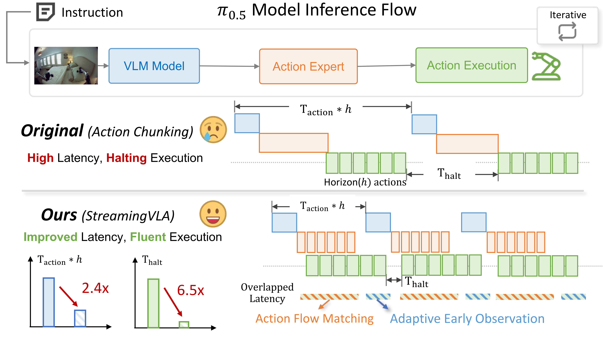
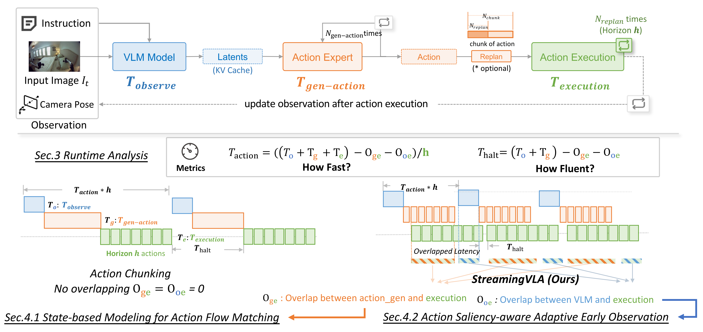
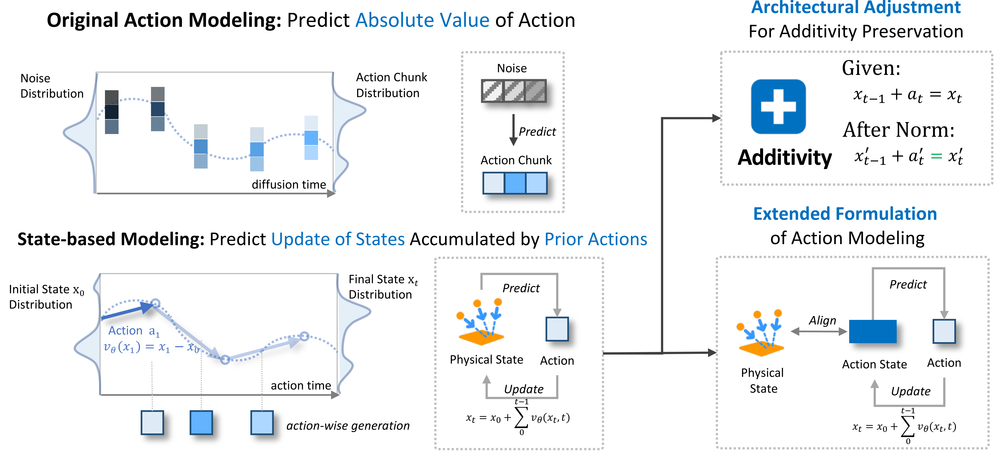
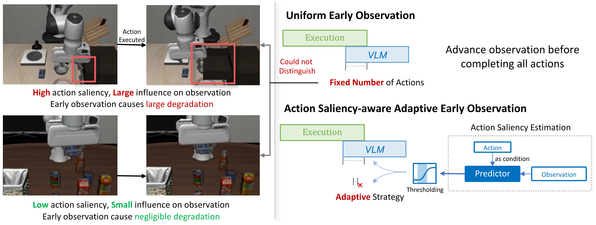
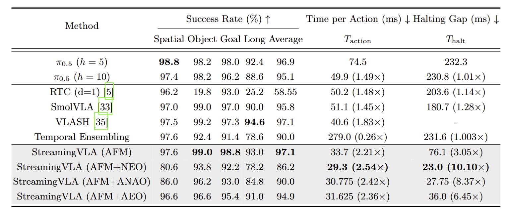
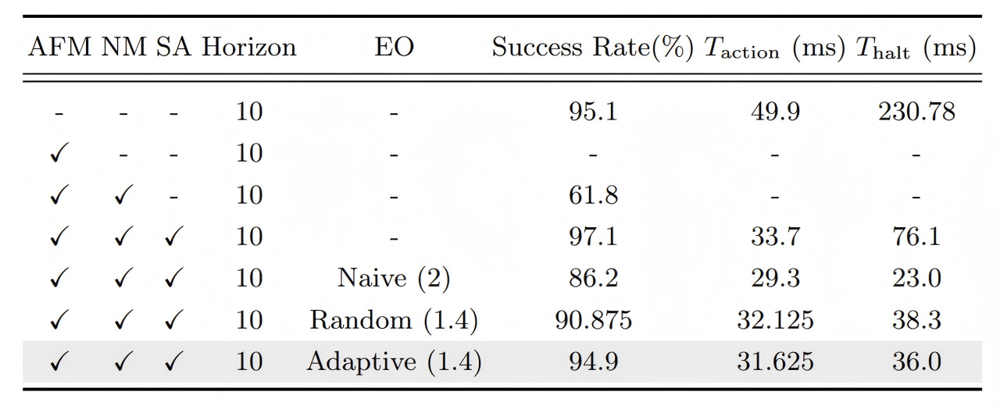

StreamingVLA: Streaming Vision-Language-Action Model with Action Flow Matching and Adaptive Early Observation
Abstract
Vision-language-action (VLA) models have demonstrated exceptional performance in natural language-driven perception and control. However, the high computational cost of VLA models poses significant efficiency challenges, particularly for resource-constrained edge platforms in real-world deployments. However, since different stages of VLA (observation, action generation and execution) must proceed sequentially, and wait for the completion of the preceding stage, the system suffers from frequent halting and high latency. To address this, We conduct a systematic analysis to identify the challenges for fast and fluent generation, and propose enabling VLAs with the ability to asynchronously parallelize across VLA stages in a "streaming" manner. First, we eliminate the reliance on action chunking and adopt action flow matching, which learns the trajectory of action flows rather than denoising chunk-wise actions. It overlaps the latency of action generation and execution. Second, we design an action saliency-aware adaptive observation mechanism, thereby overlapping the latency of execution and observation. Without sacrificing performance, StreamingVLA achieves substantial speedup and improves the fluency of execution. It achieves a 2.4 × latency speedup and reduces execution halting by 6.5 ×.
Overall Framework

The Vision-Language-Action (VLA) model brings powerful generalization capabilities to embodied intelligence, but its sequential execution of the three stages of "observation-generation-execution" causes frequent pauses between actions, severely impacting the smoothness and real-time performance of interactions. To address this issue, we propose the StreamingVLA framework. By introducing action flow matching and adaptive early observation techniques, it achieves parallel processing of the "generation and execution" and "observation and execution" dimensions, respectively, enabling the model to generate and execute actions asynchronously in a "streaming" manner.
In the LIBERO benchmark, StreamingVLA maintains a high success rate of 94.9% (essentially on par with the baseline model's 95.1%) while reducing single-action latency to 31.6 milliseconds, achieving a 2.4x end-to-end speedup. Furthermore, it significantly reduces the halting time during execution from 232.3 milliseconds to 36.0 milliseconds, a reduction of 6.5 times. In real-device experiments, StreamingVLA reduced the average action latency from 271.49 milliseconds to 170.88 milliseconds, achieving a 1.58x speedup, and providing a new solution for the efficient deployment of VLA models in real-world scenarios.
Methodology
Runtime Analysis
To gain a deeper understanding of the efficiency bottlenecks in the VLA execution process, we first conducted a detailed runtime sequence analysis of a typical VLA model represented by Pi0.5 (as shown in the figure below). This type of model consists of a Visual Language Model (VLM) and a diffusion-based action expert. Its execution flow can be divided into three main stages:
First, in the observation stage, the VLM generates hidden features (KV Cache) based on the current image, language commands, and robot state; second, in the action generation stage, the action expert generates an action block containing multiple future actions based on these features through a diffusion process; finally, in the execution stage, the robot executes these actions sequentially, and after completion, enters the next loop (as shown in the lower left of the figure).
In the traditional synchronous execution mode, the three stages are strictly sequential and wait for each other. This means that after each action is completed, the system must wait for the next observation and action generation to be completed before continuing execution. The resulting latency time is equal to the sum of the observation time and the action generation time. Our actual tests show that this waiting time is considerable and is the main cause of the robot's disjointed actions.
Based on the above analysis, we clarified our optimization objective: to reduce the average latency and halting time of each action while maintaining model performance as much as possible. To this end, we propose to replace the traditional approach of simply compressing the latency of each stage by overlapping the time of different stages, hoping to achieve parallelization of the two dimensions of "action generation and action execution" and "scene observation and action execution", thereby achieving "streaming" execution (as shown in the lower right of the figure).

Action Flow Matching
In the execution pipeline of traditional VLA models, the action generation and execution stages are strictly sequential, which is one of the main reasons for the system's low efficiency. Specifically, under the action block generation mechanism, action experts generate action blocks containing multiple future actions at once through a multi-step diffusion denoising process. Only after the entire action block is fully generated can the robot begin executing the first action. This "generate all first, then execute sequentially" mode ensures no temporal overlap between action generation and execution.
To address this, we introduce a state-based action flow matching method. The core idea of this method is to transform the action generation process from "generating an action block at once" to "continuously evolving a state." The model no longer directly predicts the absolute value of actions but maintains an "action space state" that accumulates historical actions and predicts the "velocity field" that evolves this state over time. At each step, the model predicts the velocity field based on the current state and observation information, obtains the action output at the current moment through simple time integration, and updates the state. This process allows each action to be executed immediately after generation, while the model continues to generate the next action based on the updated state, thus achieving seamless overlap between action generation and execution on the time axis.
However, adapting this method to large-scale VLA models and the complex benchmark task of Libero presents two key challenges. First, in complex control scenarios, the actions output by the model must pass through a controller to be converted into physical action, causing the linear relationship between actions and physical states to be lost. To address this, we extend state modeling by introducing "action space states" as state variables maintained internally by the model. We also pre-compute the action space states of the complete trajectory to ensure alignment with the physical space states during training. Second, normalization layers in large models can disrupt the crucial additivity upon which the "state plus action equals new state" principle of the flow matching framework relies. We specifically modify this by removing the offset term and unifying the scaling factor, ensuring that the normalized variables still satisfy additivity. This maintains training stability while preserving the core mathematical structure of flow matching.
Through these extensions and adjustments, action flow matching was successfully deployed in large-scale VLA models, significantly reducing the waiting time between action generation and execution, laying a solid foundation for achieving parallelism in the "generation-execution" dimension.

Adaptive Early Observation
After action flow matching solves the parallel "generation-execution" problem, the other major source of system latency - the serial waiting between "observation" and "execution" - becomes key to further optimization. If the VLM can start the next round of observation processing before the robot has completed all its actions, the observation and execution times can overlap, thereby further reducing lag time. Early observation technology is proposed to address this goal; its core idea is to start VLM inference for the next round of observation as soon as the robot executes part of the current action block.
However, directly performing naive early observation leads to obtaining incorrect scene information, ultimately resulting in a significant deterioration in model performance. Therefore, we propose an adaptive early observation method that dynamically decides whether to perform early observation based on action saliency.
Action saliency refers to the degree of influence of a certain action on the subsequent observation results. Highly saliency actions (such as large movements) cause drastic changes in the environment. If such actions are observed before execution, there will be a serious mismatch between the environmental information obtained by the VLM and the actual physical environment, making the generated subsequent actions inaccurate. Conversely, low-saliency actions have minimal impact on environmental changes, and the error caused by early observation is correspondingly smaller.
To quantify the saliency of actions, we designed a lightweight Transformer-based predictor to dynamically evaluate the saliency of actions yet to be executed. This predictor takes the current image embedding and the remaining sequence of unexecuted actions as input, and outputs the predicted change in image embedding after these actions are executed. The predictor is trained using observed changes in image embedding after actual execution as a supervisory signal, resulting in a much smaller parameter count and lower training cost compared to a full VLM. During inference, the system calls this predictor to estimate the saliency of remaining actions: if the predicted change is below a preset threshold, the next round of observations is initiated early, achieving parallel observation and execution; if it is above the threshold, observations are performed only after the actions are completed, ensuring the VLM acquires accurate environmental information. The additional overhead of this predictor accounts for only about 5% of the total model inference time, and its training cost is far lower than full model fine-tuning, yet it delivers considerable speedup benefits.

Performance
Simulation Environment Testing
We conducted a comprehensive evaluation of StreamingVLA on four task sets within the LIBERO simulation environment. Experimental results show that StreamingVLA achieves a significant efficiency improvement while maintaining a success rate (94.9%) comparable to the baseline model (Pi0.5). Compared to Pi0.5 (h=10), which generates 10 actions per observation, the single-action latency decreased from 49.9 milliseconds to 31.6 milliseconds, achieving a speedup of 1.57 times; the stuttering time was sharply reduced from 230.8 milliseconds to 36.0 milliseconds, a reduction of 6.45 times.

Ablation Experiments
Ablation experiments further validated the effectiveness of each module. State alignment is crucial for successful action flow matching; lack of alignment directly leads to training failure. Introducing alignment significantly boosted the model's success rate to 97.1%, while latency and stuttering were substantially reduced. Adaptive advance observation, compared to random advance observation, increased the success rate from 90.9% to 94.9% at the same trigger frequency, fully demonstrating the effectiveness of its intelligent scheduling.

Real-World Experiments
To further verify the effectiveness of StreamingVLA in a real physical environment, we deployed it on the Franka Panda robotic arm platform to perform a grasping-placement task in a desktop workspace. This task requires the robotic arm to grasp an object from a specified location and place it at a target location, a typical scenario for testing action execution accuracy and the timeliness of perception updates. The experiment used a model based on the Pi0.5 architecture, with an action horizon of 8. In the baseline configuration, the original Pi0.5 strategy uses 8 action horizons and 4-step replanning; StreamingVLA uses the same horizons but generates actions in a streaming manner. Experimental results show that the average action latency of StreamingVLA is 170.88 milliseconds, while the average action latency of the original Pi0.5 baseline model is 271.49 milliseconds. This result verifies that StreamingVLA can significantly improve control efficiency in real physical systems, providing crucial speed assurance for real-time robot operation.
Summary
This paper addresses the high latency and execution stuttering issues faced by VLA models in practical deployments by proposing the StreamingVLA framework. Through a systematic analysis of the execution process, we identified key bottlenecks and introduced two core technologies: action flow matching and adaptive early observation. These technologies achieve parallel processing in two dimensions: "action generation-action execution" and "scene observation-action execution," respectively. Experimental results show that StreamingVLA achieves significant speed improvements and smoothness enhancements without sacrificing model performance.
This work provides deeper insights: when building efficient embodied intelligent systems, optimization should not only focus on model compression but also on the coordination and parallelism of the execution process. The "streaming" execution concept demonstrated by StreamingVLA is not only applicable to VLA models but also provides new design ideas for other multi-stage, multimodal real-time interactive systems, potentially promoting the efficient deployment and widespread application of intelligent systems in real-world scenarios.
BibTeX
@misc{shi2026streamingvlastreamingvisionlanguageactionmodel,
title={StreamingVLA: Streaming Vision-Language-Action Model with Action Flow Matching and Adaptive Early Observation},
author={Yiran Shi and Dongqi Guo and Tianchen Zhao and Feng Gao and Liangzhi Shi and Chao Yu and ZhiJian Mo and Qihua Xiao and XiaoShuai Peng and Qingmin Liao and Yu Wang},
year={2026},
eprint={2603.28565},
archivePrefix={arXiv},
primaryClass={cs.RO},
url={https://arxiv.org/abs/2603.28565},
}